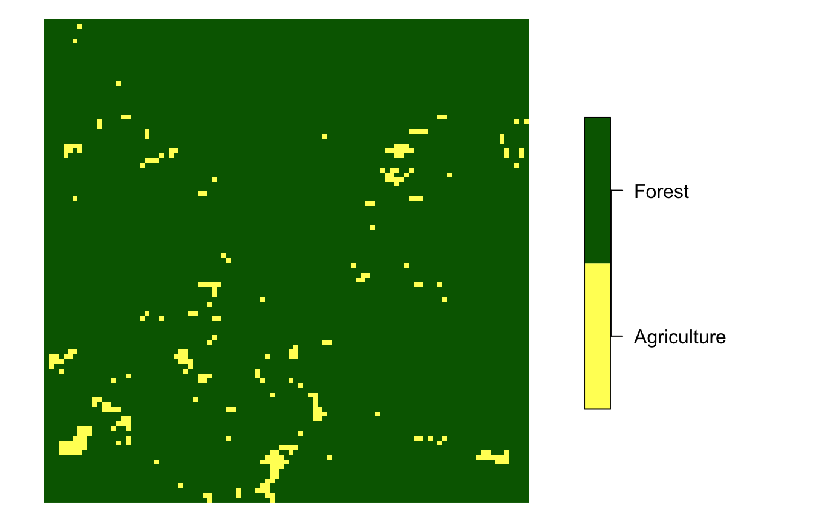
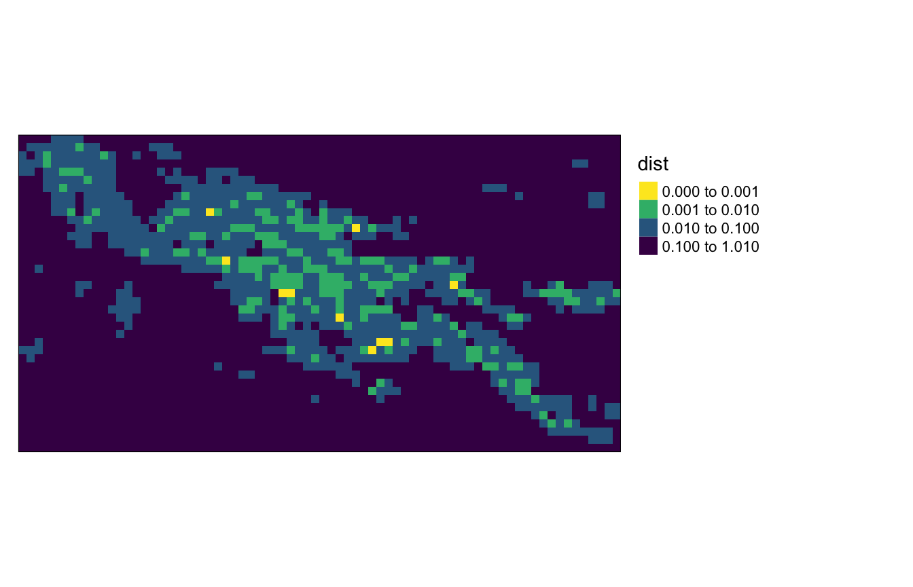
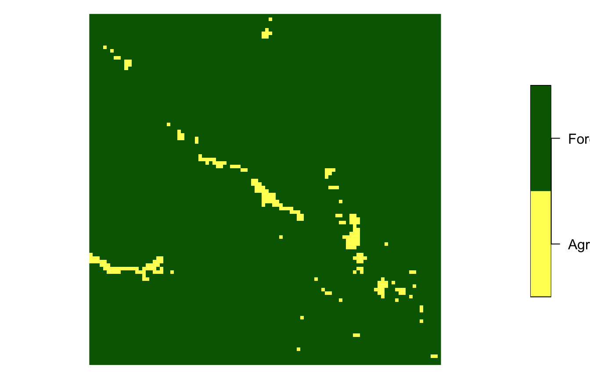
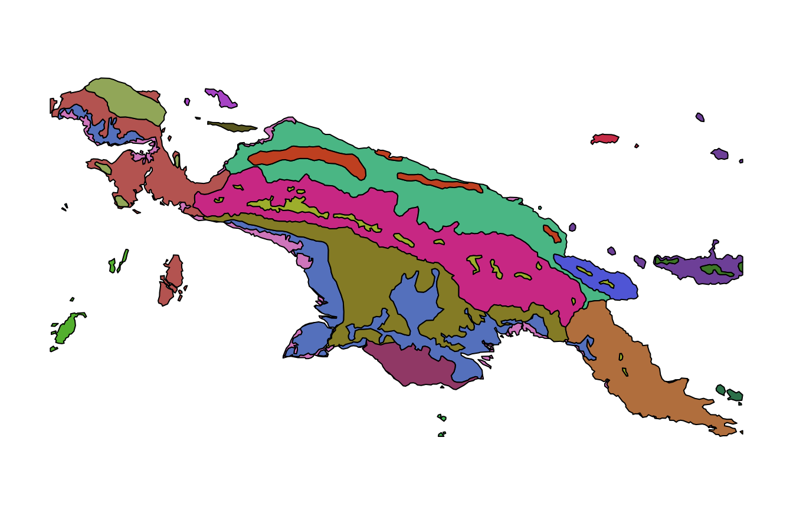
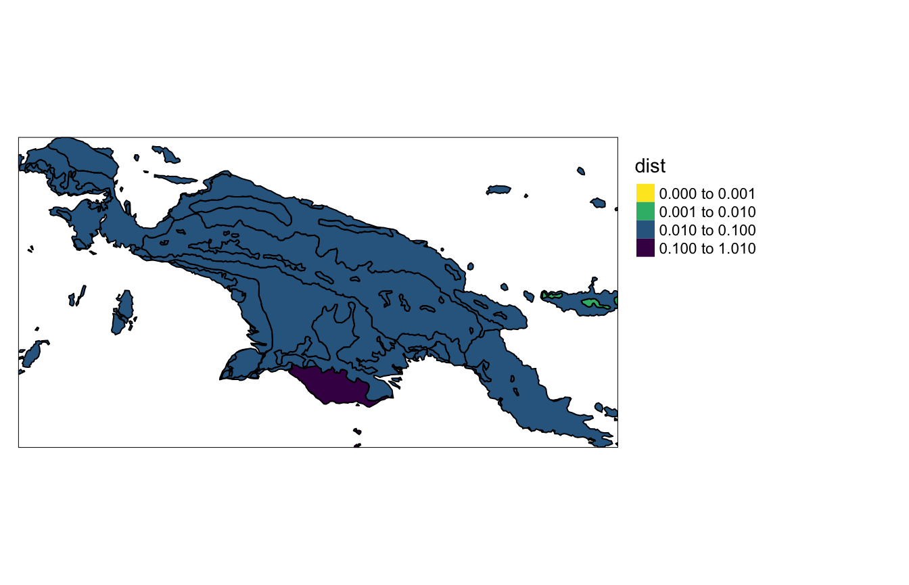
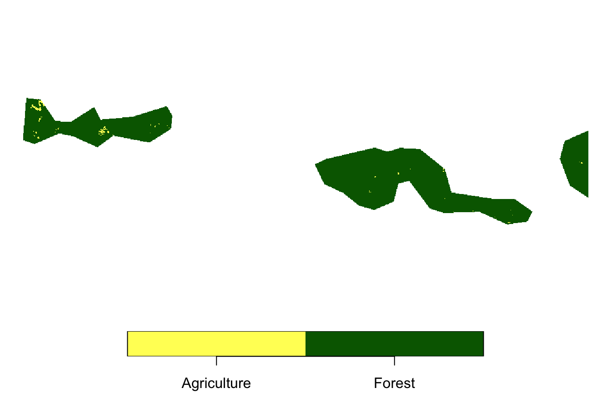

Spatial patterns’ search
Jakub Nowosad
2021-01-26
Source:vignettes/articles/v3_search.Rmd
v3_search.RmdThe pattern-based spatial analysis makes it possible to search for areas with similar spatial patterns. This vignette shows how to do spatial patterns’ search on example datasets. Let’s start by attaching necessary packages:
library(motif)
library(stars)
#> Loading required package: abind
#> Loading required package: sf
#> Linking to GEOS 3.8.1, GDAL 3.1.4, PROJ 6.3.1
library(sf)
library(tmap)Spatial patterns’ search requires two spatial objects. The first one is the area of interest, and the second one is a larger area that we want to search in. For this vignette, we read the "raster/landcover2015.tif" file, and crop our area of interest using coordinates of its borders.
landcover = read_stars(system.file("raster/landcover2015.tif", package = "motif"))
ext = st_bbox(c(xmin = 238000, xmax = 268000,
ymin = -819814, ymax = -789814),
crs = st_crs(landcover))
landcover_ext = landcover[ext]The landcover_ext represents area mostly covered by forest with some agriculture.

We want to compare it to the land cover dataset of New Guinea - landcover.

Regular local landscapes
Spatial patterns’ search is done by the lsp_search() function. It expects an area of interest as the first object and the larger area as the second one. We should provide the type of signature (type) and the suitable distance function (dist_fun) that we want to use to compare two datasets. Additional arguments include the size of the search window from the larger area (window) and how much of NA values we can accept in the local landscapes (threshold).
search_1 = lsp_search(landcover_ext, landcover,
type = "cove", dist_fun = "jensen-shannon",
window = 100, threshold = 1)
#> Metric: 'jensen-shannon' using unit: 'log2'.
search_1
#> stars object with 2 dimensions and 3 attributes
#> attribute(s):
#> id na_prop dist
#> Min. : 1.0 Min. :0.0000 Min. :0.0001794
#> 1st Qu.: 722.2 1st Qu.:0.0022 1st Qu.:0.0538766
#> Median :1443.5 Median :1.0000 Median :0.5000000
#> Mean :1443.5 Mean :0.6757 Mean :0.3352646
#> 3rd Qu.:2164.8 3rd Qu.:1.0000 3rd Qu.:0.5000000
#> Max. :2886.0 Max. :1.0000 Max. :1.0000000
#> dimension(s):
#> from to offset delta refsys point values x/y
#> x 1 74 -1091676 30000 unnamed NA NULL [x]
#> y 1 39 -38556.5 -30000 unnamed NA NULL [y]The result of the lsp_search() function is a stars object with three attributes:
-
id- unique value for each local landscape -
na_prop- proportion (0-1) of NA values in each local landscapes -
dist- the distance between our area of interest and each local landscape
We can visualize the results, using, for example, the tmap package:
my_breaks = c(0, 0.001, 0.01, 0.1, 1.01)
tm_shape(search_1) +
tm_raster("dist", breaks = my_breaks, palette = "-viridis") +
tm_layout(legend.outside = TRUE)
It is now possible to see that there are several areas with a distance below 0.001 represented by a yellow color - they are the most similar to landcover_ext.
We can find their ids using the code below.
unique(search_1$id[which(search_1$dist < 0.001)])
#> [1] 690 856 1136 1386 1439 1440 1668 1895 1896 1968To extract selected local landscape, the lsp_extract() function can be used.
search_1_690 = lsp_extract(landcover,
window = 100,
id = 690)Its output is a stars object, that we can vizualize and see that it is fairly similar to the area of interest.
search_1_690 = droplevels(search_1_690)
plot(search_1_690, main = NULL)
Irregular local landscapes
Search is also possible in irregular local landscapes, based on polygon data. ecoregions.gpkg contains terrestrial ecoregions for New Guinea from https://ecoregions2017.appspot.com/.
ecoregions = read_sf(system.file("vector/ecoregions.gpkg", package = "motif"))This dataset has 22 rows, where each row relates to one ecoregion. Each ecoregion is also related to a unique value in the id column.

The lsp_search() function works very similarly to the previous case - we just need to provide our ecoregions in the window argument.
search_2 = lsp_search(landcover_ext, landcover,
type = "cove", dist_fun = "jensen-shannon",
window = ecoregions["id"], threshold = 1)
#> Metric: 'jensen-shannon' using unit: 'log2'.
search_2
#> stars object with 2 dimensions and 3 attributes
#> attribute(s), summary of first 1e+05 cells:
#> id na_prop dist
#> Min. :21 Min. :0.01 Min. :0.02
#> 1st Qu.:21 1st Qu.:0.01 1st Qu.:0.02
#> Median :21 Median :0.01 Median :0.02
#> Mean :21 Mean :0.01 Mean :0.02
#> 3rd Qu.:21 3rd Qu.:0.01 3rd Qu.:0.02
#> Max. :21 Max. :0.01 Max. :0.02
#> NA's :98383 NA's :98383 NA's :98383
#> dimension(s):
#> from to offset delta refsys point values x/y
#> x 1 7360 -1091676 300 unnamed FALSE NULL [x]
#> y 1 3812 -38556.5 -300 unnamed FALSE NULL [y]Let’s vizualize the output:
my_breaks = c(0, 0.001, 0.01, 0.1, 1.01)
tm_shape(search_2) +
tm_raster("dist", breaks = my_breaks, palette = "-viridis") +
tm_shape(ecoregions) +
tm_borders(col = "black") +
tm_layout(legend.outside = TRUE)
#> stars object downsampled to 1390 by 720 cells. See tm_shape manual (argument raster.downsample)
This search shows that most of the polygons are fairly different from our area of interest. Only one of them, located in the east, has a relatively small distance of about 0.007.
min_search2 = min(search_2$dist, na.rm = TRUE)
min_search2
#> [1] 0.006810959We can obtain its id (10) using the code below.
Now, we can use lsp_extract() to extract land cover for this ecoregion.
search_2_10 = lsp_extract(landcover,
window = ecoregions["id"],
id = 10)This local landscape is also mostly covered by forest with just some smaller areas of agriculture.
search_2_10 = droplevels(search_2_10)
plot(search_2_10, main = NULL)